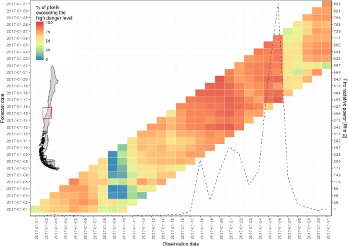
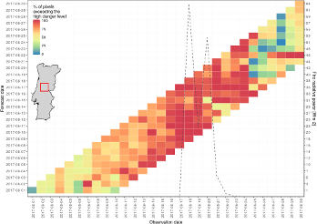
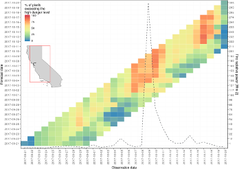

Verification of fire danger classes
Claudia Vitolo
2021-02-05
Source:vignettes/caliver_danger_classes-vignette.Rmd
caliver_danger_classes-vignette.RmdThe package caliver contains functions for the calibration and verification of gridded model outputs. The package was designed with a fire risk model in mind (GEFF) but, in the near future, this is going to develop in a model agnostic tool. The introductory vignette “An introduction to the caliver package” (Vitolo, Di Giuseppe, and D’Andrea 2018) contain a detailed description of the main functionalities of this package. The goal of this vignette, instead, is to describe how to use caliver to calculate and verify fire danger classes based on user-defined areas. This vignette contains the code to run all the analyses in (Di Giuseppe et al., n.d.), please refer to this paper for more information on the methodology.
R package caliver
For information on how to install and load caliver, please refer to the vignette “An introduction to the caliver package” and the README file in the repository.
# Install caliver from GitHub
# install.packages("devtools", repos = "http://cran.rstudio.com")
devtools::install_github("ecmwf/caliver")
library("caliver")
library("raster")
library("ggplot2")
library("verification")
library("rowr")
library("dplyr")
library("rgeos")
library("maptools")
library("sp")
library("RColorBrewer")
library("stringr")
# setwd("/hugetmp/publications/FireForecasting/data")
# rasterOptions(tmpdir="/hugetmp/tmp")
# Check path dirname(rasterTmpFile()) Get data
Regions/countries of interest
We will demonstrate how to calculate and validate fire danger levels for 4 GFED4 areas and countries:
- Europe (EURO) and Portugal,
- Temperate North America (TENA) and California,
- Southern Hemisphere South America (SHSA) and Chile.
df_gfed4 <- data.frame(ID = 1:14,
Region = c("BONA", "TENA", "CEAM", "NHSA", "SHSA", "EURO",
"MIDE", "NHAF", "SHAF", "BOAS", "CEAS", "SEAS",
"EQAS", "AUST"),
Zone = c("north", "north", "tropics", "tropics", "south",
"north", "north", "tropics", "south", "north",
"north", "tropics", "tropics", "south"),
stringsAsFactors = FALSE)
# Get all the GFED4 basis regions
BasisRegions <- readRDS(system.file("extdata", "GFED4_BasisRegions.rds",
package = "caliver"))
# GFED4 regions of interest
EURO <- BasisRegions[BasisRegions$Region == "EURO",]
TENA <- BasisRegions[BasisRegions$Region == "TENA",]
SHSA <- BasisRegions[BasisRegions$Region == "SHSA",]
# Countries of interest
pt <- raster::getData(name = "GADM", country = "Portugal", level = 1)[-c(2,13), ]
chile <- raster::getData(name = "GADM", country = "Chile", level = 0)
cali <- raster::getData(name = "GADM", country = "USA", level = 1)[5, ] # cali
# All the GFED4 regions
BasisRegions_join <- BasisRegions
BasisRegions_join@data$id <- 1:nrow(BasisRegions_join@data) # add id column for join
regionXFort <- fortify(BasisRegions_join, data = BasisRegions_join@data)
regionXPoly <- merge(regionXFort, BasisRegions_join@data,
by.x = "id", by.y = "id") # join data
ggplot(aes(x = long, y = lat), data = map_data("world")) +
geom_polygon(aes(group = group), fill=NA, colour = "grey65") +
coord_equal() + theme_bw() + xlab("Longitude") + ylab("Latitude") +
geom_polygon(data = regionXPoly,
aes(x = long, y = lat, group = group, fill = factor(layer)),
alpha = 0.5) +
scale_fill_manual(name="GFED4 regions",
# values = viridis::viridis(14),
values = c("darkgrey",
RColorBrewer::brewer.pal(12,"Paired"),
"lightgrey"),
labels = regions) +
geom_polygon(data = map_data("world", region = "Portugal"),
aes(x = long, y = lat, group = group, colour = "Portugal"),
fill = NA) +
geom_polygon(data = map_data("world", region = "Chile"),
aes(x = long, y = lat, group = group, colour = "Chile"),
fill = NA) +
geom_polygon(data = map_data(map = "state", region = "California"),
aes(x = long, y = lat, group = group, colour = "California"),
fill = NA) +
scale_colour_manual(name = "Study areas",
values = c("Portugal" = "brown",
"California" = "darkblue",
"Chile" = "darkgreen")) +
scale_x_continuous(limits = c(-180, +180), expand = c(0, 0)) +
scale_y_continuous(limits = c(-85, +85), expand = c(0, 0))
ggsave(file = "figures/world.png", plot = worldcountries,
device = cairo_ps, fallback_resolution = 600,
width = unit(1050, "px"), height = unit(750, "px"))Plot areas and countries of interest (Fig.1).

Reanalysis data
For a matter of consistency with the introductory vignette, we will use the FWI as index to estimate the fire danger classes. The first step is to download, from the GEFF-reanalysis web app, reanalysis data from 1980 to 2016. Assuming that data is downloaded in the folder “reanalysis” of the working directory, we can use stack_netcdf_files() to aggregate all the files into one netcdf file (this is not necessary if you have run through the examples in the intro vignette) and load it as RasterBrick. See the introductory vignette for more information.
# FWI reanalysis dataset, GEFF reanalysis v2.0
FWI <- brick("/hugetmp/GEFF_ERAI_Zenodo/fwi.nc") # 7GB!
FWI <- FWI[[which(FWI@z[[1]] < as.Date("2017-01-01"))]] # only 1980-2016
writeRaster(FWI, filename="fwi_erai_1980_2016.nc", format="CDF", overwrite=TRUE)Calculate fire danger classes by GFED4 areas and countries
Calculate fire danger classes as shown in the introductory vignette.
# Define a vector with a sequence of dates related to the reanalysis
dataDates <- seq.Date(from = as.Date("1980-01-01"),
to = as.Date("2016-12-31"),
by = "day")
# Initialise empty matrix to store thresholds
df <- matrix(data = NA, nrow = 0, ncol = 6)
# Mask/Crop/Subset FWI and generate thresholds for each GFED4 region
for (i in seq_along(df_gfed4$Region)) {
region <- df_gfed4$Region[i]
zone <- df_gfed4$Zone[i]
print(paste(i, region, zone))
regionPoly <- BasisRegions[BasisRegions$Region == region,]
season <- which(get_fire_season(dates = dataDates, zone = zone) == TRUE)
regionR <- mask_crop_subset(r = FWI, p = regionPoly, idx = season)
df <- rbind(df, c(region, get_fire_danger_levels(fire_index = regionR)))
}
df <- data.frame(df, stringsAsFactors = FALSE)
names(df) <- c("Location", "Low", "Moderate", "High", "Very high", "Extreme")
df[] <- lapply(X = df, FUN = as.character)
df[2:6] <- lapply(X = df[2:6], FUN = as.numeric)
# Mask/Crop/Subset FWI and generate thresholds for each country of interest
regionData <- list()
### Portugal ###
season <- which(get_fire_season(dates = dataDates, zone = "north") == TRUE)
regionR_pt <- mask_crop_subset(r = FWI, p = pt, idx = season, accurate = FALSE)
df <- rbind(df, c("Portugal", get_fire_danger_levels(fire_index = regionR_pt)))
percs <- round(quantile(na.omit(as.vector(regionR_pt)), probs = c(0.70, 0.90, 0.98)), 0)
# Density plot with thresholds
pdf_pt <- plot_fire_pdf(fire_index = regionR_pt,
thresholds = as.numeric(df[which(df[,1]== "Portugal"), 2:6]),
upper_limit = 110,
v_lines = percs)
regionData[[1]] <- na.omit(as.vector(regionR_pt))
### Chile ###
season <- which(get_fire_season(dates = dataDates, zone = "south") == TRUE)
regionR_chile <- mask_crop_subset(r = FWI, p = chile, idx = season, accurate = FALSE)
df <- rbind(df, c("Chile", get_fire_danger_levels(fire_index = regionR_chile)))
percs <- round(quantile(na.omit(as.vector(regionR_chile)), probs = c(0.70, 0.90, 0.98)), 0)
# Density plot with thresholds
pdf_chile <- plot_fire_pdf(fire_index = regionR_chile,
thresholds = as.numeric(df[which(df[,1]== "Chile"), 2:6]),
upper_limit = 110,
v_lines = percs)
regionData[[2]] <- na.omit(as.vector(regionR_chile))
### California ###
season <- which(get_fire_season(dates = dataDates, zone = "north") == TRUE)
regionR_cali <- mask_crop_subset(r = FWI, p = cali, idx = season, accurate = FALSE)
df <- rbind(df, c("California", get_fire_danger_levels(fire_index = regionR_cali)))
percs <- round(quantile(na.omit(as.vector(regionR_cali)), probs = c(0.70, 0.90, 0.98)), 0)
# Density plot with thresholds
pdf_cali <- plot_fire_pdf(fire_index = regionR_cali,
thresholds = as.numeric(df[which(df[,1]== "California"), 2:6]),
upper_limit = 110,
v_lines = percs)
regionData[[3]] <- na.omit(as.vector(regionR_cali))
regionDF <- cbind.fill(regionData[[1]], regionData[[2]], regionData[[3]], fill = NA)
names(regionDF) <- c("Portugal", "Chile", "California")
# saveRDS(regionDF, "regionDF.rds")
# saveRDS(df, "thresholds_geff.rds")
# df <- readRDS("thresholds_geff.rds")
knitr::kable(df, row.names = FALSE)
# ggsave(file = paste0(region, "PDF2.eps"),
# plot = listOfPlots[[i]], width=unit(8, "in"), height=unit(5, "in"))Daily climatology fire danger by GFED4 areas and countries
Calculate daily climatology.
dclima <- caliver::daily_clima(r = FWI, probs = 0.50) # median
dclima <- dclima[[c(1:59,61:366)]] # Remove 29-02
writeRaster(dclima, filename='dclima_50.nc', format="CDF", overwrite=TRUE)
# dclima <- brick("dclima_50.nc")POD by GFED4 regions
It is interesting to try and understand whether there is a higher POD in some areas compared to others. In order to assess this, we proceed as follows:
- use the previously calculated regional thresholds
- extract 1 year of forecasts (day 2 and 6 only)
- for each forecast day we compare the forecasted fwi to the frp observed from satellites, adding also the climatology
# Load thresholds
df <- readRDS("thresholds_geff.rds")
# Get forecasts for day 2-6-10
day2FWI <- stack()
day6FWI <- stack()
day10FWI <- stack()
for (file in list.files(path = "/hugetmp/FireEventsDatabase/fwi2017/ffwi_rotated",
pattern = "*hr.nc", full.names = TRUE)){
print(file)
x <- brick(file)
day2FWI <- stack(day2FWI, x[[2]])
day6FWI <- stack(day6FWI, x[[6]])
day10FWI <- stack(day10FWI, x[[10]])
}
# Read in Fire Radiative Power (frp) and resample
frp <- raster::brick("/hugetmp/CAMS/CAMS_2017-01-01_2017-12-31_frpfire_rotated.nc")
frpR <- raster::resample(x = frp, y = day2FWI[[1]], progress = "text")
# Load clima, if not already in memory
# dclima <- brick("dclima_50.nc")
# Resample clima
dclimaR <- resample(x = dclima, y = day2FWI[[1]], progress = "text")
POD2 <- POD6 <- POD10 <- climafire <- c()
for (i in 1:14){
print(df_gfed4$Region[i])
areaOfInterest <- BasisRegions[i,]
my_threshold <- as.numeric(df$`Very high`[df$RegionCountry == df_gfed4$Region[i]])
frpM <- caliver::mask_crop_subset(r = frpR, p = areaOfInterest)
#day2FWIM <- mask_crop_subset(r = day2FWI, p = areaOfInterest)
#day6FWIM <- mask_crop_subset(r = day6FWI, p = areaOfInterest)
day10FWIM <- mask_crop_subset(r = day10FWI, p = areaOfInterest)
clima_temp <- mask_crop_subset(r = dclima, p = areaOfInterest)
frp_vector <- as.vector(frpM[])
#day2_vector <- as.vector(day2FWIM[])
#day6_vector <- as.vector(day6FWIM[])
day10_vector <- as.vector(day10FWIM[])
clima_vector <- as.vector(clima_temp[])
idx <- which(frp_vector >= 0.5)
# Take only cells where there has been a large fire
frp_vector <- frp_vector[idx]
#day2_vector <- day2_vector[idx]
#day6_vector <- day6_vector[idx]
day10_vector <- day10_vector[idx]
clima_vector <- clima_vector[idx]
frp_vector <- frp_vector >= 0.5
#day2_vector <- day2_vector >= my_threshold
#day6_vector <- day6_vector >= my_threshold
day10_vector <- day10_vector >= my_threshold
clima_vector <- clima_vector >= my_threshold
#POD2 <- c(POD2, verify(obs = frp_vector, pred = day2_vector, frcst.type = "binary", obs.type = "binary")$POD)
#POD6 <- c(POD6, verify(obs = frp_vector, pred = day6_vector, frcst.type = "binary", obs.type = "binary")$POD)
POD10 <- c(POD10, verify(obs = frp_vector, pred = day10_vector, frcst.type = "binary", obs.type = "binary")$POD)
climafire <- c(climafire, verify(obs = frp_vector, pred = clima_vector,
frcst.type = "binary", obs.type = "binary")$POD)
#rm(areaOfInterest, my_threshold, frpM, day2FWIM, day6FWIM, frp_vector, day2_vector, day6_vector, idx)
#saveRDS(POD2, "POD2.rds")
#saveRDS(POD6, "POD6.rds")
saveRDS(POD10, "POD10.rds")
saveRDS(climafire, "climafire.rds")
gc()
removeTmpFiles() # remove temp files
}
# POD2 <- readRDS("POD2.rds")
# POD6 <- readRDS("POD6.rds")
# POD10 <- readRDS("POD10.rds")
# climafire <- readRDS("climafire.rds")
regions.pod <- BasisRegions %>% broom::tidy(region = "ID") # to fix!
# add attributes
regions.pod$POD2 <- regions.pod$POD6 <- regions.pod$POD10 <- regions.pod$clima <- NA
for (i in 1:14){
regions.pod$POD2[regions.pod$id == as.character(i)] <- round(POD2[i], 1)
regions.pod$POD6[regions.pod$id == as.character(i)] <- round(POD6[i], 1)
regions.pod$POD10[regions.pod$id == as.character(i)] <- round(POD10[i], 1)
regions.pod$clima[regions.pod$id == as.character(i)] <- round(climafire[i], 1)
}
regions.pod$POD2 <- factor(regions.pod$POD2,
levels = seq(from = 0.0, to = 1.0, by = 0.1),
labels = seq(from = 0.0, to = 1.0, by = 0.1))
regions.pod$POD6 <- factor(regions.pod$POD6,
levels = seq(from = 0.0, to = 1.0, by = 0.1),
labels = seq(from = 0.0, to = 1.0, by = 0.1))
regions.pod$POD10 <- factor(regions.pod$POD10,
levels = seq(from = 0.0, to = 1.0, by = 0.1),
labels = seq(from = 0.0, to = 1.0, by = 0.1))
regions.pod$clima <- factor(regions.pod$clima,
levels = seq(from = 0.0, to = 1.0, by = 0.1),
labels = seq(from = 0.0, to = 1.0, by = 0.1))
ggplot(aes(x = long, y = lat), data = map_data("world")) +
geom_polygon(aes(group = group), fill=NA, colour = "grey65") +
coord_equal() + theme_bw() + xlab("Longitude") + ylab("Latitude") +
geom_polygon(data = regions.pod,
aes(x = long, y = lat, group = group, fill = as.factor(POD2)),
alpha = 0.6) +
scale_fill_manual(name="POD2",
values = c("#FFF7EC", "#FFF7EC", brewer.pal(9, "OrRd")), drop = FALSE) +
theme(text = element_text(size=20))
ggplot(aes(x = long, y = lat), data = map_data("world")) +
geom_polygon(aes(group = group), fill=NA, colour = "grey65") +
coord_equal() + theme_bw() + xlab("Longitude") + ylab("Latitude") +
geom_polygon(data = regions.pod,
aes(x = long, y = lat, group = group, fill = POD6),
alpha = 0.6) +
scale_fill_manual(name="POD6",
values = c("#FFF7EC", "#FFF7EC", brewer.pal(9, "OrRd")), drop = FALSE) +
theme(text = element_text(size=20))
ggplot(aes(x = long, y = lat), data = map_data("world")) +
geom_polygon(aes(group = group), fill=NA, colour = "grey65") +
coord_equal() + theme_bw() + xlab("Longitude") + ylab("Latitude") +
geom_polygon(data = regions.pod,
aes(x = long, y = lat, group = group, fill = POD10),
alpha = 0.6) +
scale_fill_manual(name="POD10",
values = c("#FFF7EC", "#FFF7EC", brewer.pal(9, "OrRd")), drop = FALSE) +
theme(text = element_text(size=20))
ggplot(aes(x = long, y = lat), data = map_data("world")) +
geom_polygon(aes(group = group), fill=NA, colour = "grey65") +
coord_equal() + theme_bw() + xlab("Longitude") + ylab("Latitude") +
geom_polygon(data = regions.pod,
aes(x = long, y = lat, group = group, fill = clima),
alpha = 0.6) +
scale_fill_manual(name="Climatology",
values = c("#FFF7EC", "#FFF7EC", brewer.pal(9, "OrRd")), drop = FALSE) +
theme(text = element_text(size=20))Verify fire danger classes
The following four events were selected to verify the previously calculated danger classes:
- Spain 2016-08-28 2016-09-11
- Chile 2017-01-15 2017-01-29
In order to find the actual area affected by fires (for each of the above events), we follow the steps below:
- Get Fire Radiative Power from CAMS observations using the bash script CAMS_GFAS_Observations.sh:
sh CAMS_Observations.sh. This generates the file: CAMS_TimeWindow_frpfire_rotated.nc - Load the file above as RasterBrick
- Sum all the FRP over time
- If there are many small fires, we can set a threshold of minimum radiative power to be considered. Convert layer info to binary: 1 if FRP > 0.5, 0 otherwise
- Plot to check maximum extension
- Remove zeros and create a bounding box (fireBBOX) including only cells = 1
Once the affected area has been identified, we use this to verify the forecast with the observed fire radiative power.
Forecast data is obtained by using the bash scripts: GEFF_Forecast.sh: sh GEFF_Forecast.sh. This generates one file per forecast day: start_date_end_date_ecfire_fwi_fwi.nc
The code below shows how to perform the verification for the 4 events.
Chile
Numerous wildfire in Chile were reported in January 2017. In the table below we compare the danger levels at large scale and national level.
# GADM administrative boundaries
Chile <- raster::getData(name = "GADM", country = "Chile", level = 0)
# 2. Load the frp file as RasterBrick:
start_date <- "2017-01-01"
end_date <- "2017-01-31"
x <- raster::brick(paste0("/hugetmp/fire/CAMS/CAMS_",
start_date, "_", end_date, "_frpfire_rotated.nc"))
# 3. Sum all the FRP over time
xsum <- raster::calc(x, sum)
# 4. Convert layer info to binary: 1 if FRP > 0.5, 0 otherwise
thresholdFRP <- 0.5
xsum[xsum > thresholdFRP] <- 1
xsum[xsum <= thresholdFRP] <- 0 # extra step to plot pixels <= 0.5 as gray background
allFires <- mask_crop_subset(r = xsum, p = Chile, mask = TRUE, crop = TRUE)
raster::plot(allFires)
# 5-6. Remove zeros and create a bounding box including only cells = 1
xsum[xsum == 0] <- NA
fireBBOX <- as(raster::extent(raster::trim(mask_crop_subset(r = xsum,
p = Chile,
mask = TRUE,
crop = TRUE))),
"SpatialPolygons")
raster::plot(fireBBOX, border = "red", add = TRUE)
fireBBOX_CL <- as(raster::extent(-74, -70, -37, -33), "SpatialPolygons")
# raster::plot(Chile, col = "lightgray")
# raster::plot(fireBBOX_CL, lwd = 2, border = "red", add = TRUE)
In the figure above Chile is shaded in gray while the areas in green show the most important fire activities(fireBBOX), which we compare below with the high danger level calculated previously for Chile.
ChileFRP <- plot_obs_vs_forecast(input_dir = "../geff/forecast/fwi2017/ffwi_rotated",
p = fireBBOX_CL,
threshold = as.numeric(df$`Very high`[df$Location == "Chile"]),
start_date = start_date,
end_date = end_date,
obs_file_path = paste0("/hugetmp/fire/CAMS/CAMS_", start_date, "_", end_date, "_frpfire_rotated.nc"),
forecast_type = "hr",
origin = "cfwis",
index = "ffwi")
ChileFRP
ggsave(file = "/scratch/mo/moc0/fire/ChileFRP.png",
plot = ChileFRP, width=unit(1050, "px"), height=unit(750, "px"))Portugal
Numerous wildfire in Portugal were reported in January 2017. In the table below we compare the danger levels at large scale and national level.
# GADM administrative boundary
Portugal <- raster::getData(name = "GADM", country = "Portugal", level = 0)
# 2. Load the frp file as RasterBrick:
start_date <- "2017-06-01"
end_date <- "2017-06-30"
x <- raster::brick(paste0("/hugetmp/fire/CAMS/CAMS_",
start_date, "_", end_date, "_frpfire_rotated.nc"))
# 3. Sum all the FRP over time
xsum <- raster::calc(x, sum)
# 4. Convert layer info to binary: 1 if FRP > 0.5, 0 otherwise
thresholdFRP <- 0.5
xsum[xsum > thresholdFRP] <- 1
xsum[xsum <= thresholdFRP] <- 0 # extra step to plot pixels <= 0.5 as gray background
allFires <- mask_crop_subset(r = xsum, p = Portugal, mask = TRUE, crop = TRUE)
raster::plot(allFires)
# 5-6. Remove zeros and create a bounding box including only cells = 1
xsum[xsum == 0] <- NA
fireBBOX <- as(raster::extent(raster::trim(mask_crop_subset(r = xsum,
p = Portugal,
mask = TRUE,
crop = TRUE))),
"SpatialPolygons")
raster::plot(fireBBOX, border = "red", add = TRUE)
fireBBOX_CL <- as(raster::extent(-8.5, -7.6, 39.6, 40.3), "SpatialPolygons")
# raster::plot(Portugal, col = "lightgray")
# raster::plot(fireBBOX_CL, lwd = 2, border = "red", add = TRUE)
In the figure above Portugal is shaded in gray while the areas in green show the most important fire activities(fireBBOX), which we compare below with the high danger level calculated previously for Portugal.
PortugalFRP <- plot_obs_vs_forecast(input_dir = "../geff/forecast/fwi2017/ffwi_rotated",
p = fireBBOX_CL,
threshold = as.numeric(df$`Very high`[df$Location == "Portugal"]),
start_date = start_date,
end_date = end_date,
obs_file_path = paste0("/hugetmp/fire/CAMS/CAMS_", start_date, "_", end_date, "_frpfire_rotated.nc"), forecast_type = "hr", origin = "cfwis", index = "ffwi")
PortugalFRPCalifornia
Numerous wildfire in California were reported in January 2017. In the table below we compare the danger levels at large scale and national level.
# GADM administrative boundaries
California <- raster::getData(name = "GADM", country = "USA", level = 1)[6,]
# 2. Load the frp file as RasterBrick:
start_date <- "2017-09-21"
end_date <- "2017-10-20"
x <- raster::brick(paste0("/hugetmp/fire/CAMS/CAMS_",
start_date, "_", end_date, "_frpfire_rotated.nc"))
# 3. Sum all the FRP over time
xsum <- raster::calc(x, sum)
# 4. Convert layer info to binary: 1 if FRP > 0.5, 0 otherwise
thresholdFRP <- 0.5
xsum[xsum > thresholdFRP] <- 1
xsum[xsum <= thresholdFRP] <- 0 # extra step to plot pixels <= 0.5 as gray background
allFires <- mask_crop_subset(r = xsum, p = California, mask = TRUE, crop = TRUE)
raster::plot(allFires)
# 5-6. Remove zeros and create a bounding box including only cells = 1
xsum[xsum == 0] <- NA
fireBBOX <- as(raster::extent(raster::trim(mask_crop_subset(r = xsum,
p = California,
mask = TRUE,
crop = TRUE))),
"SpatialPolygons")
raster::plot(fireBBOX, border = "red", add = TRUE)
fireBBOX
fireBBOX_CL <- as(raster::extent(-123.4, -117.6, 33.7, 42), "SpatialPolygons")
# raster::plot(California, col = "lightgray")
# raster::plot(fireBBOX_CL, lwd = 2, border = "red", add = TRUE)
In the figure above California is shaded in gray while the areas in green show the most important fire activities(fireBBOX), which we compare below with the high danger level calculated previously for California.
CaliforniaFRP <- plot_obs_vs_forecast(input_dir = "../geff/forecast/fwi2017/ffwi_rotated",
p = fireBBOX_CL,
threshold = as.numeric(df$`Very high`[df$Location == "California"]),
start_date = start_date,
end_date = end_date,
obs_file_path = paste0("/hugetmp/fire/CAMS/CAMS_", start_date, "_", end_date, "_frpfire_rotated.nc"), forecast_type = "hr", origin = "cfwis", index = "ffwi")
CaliforniaFRPScores
Let’s take a large area, such as Canada. The advantage of using the above danger levels over the continuous values is that we have a better correspondance between hit rate and false alarms.
For the fire in Canada, the peak in radiative power was obtained on the 2015-06-16. To calculate the scores I need to collect the forecasts of the previous 10 days and compare fwi and frp.
place <- "Chile"
start_date <- "2017-01-01"
end_date <- "2017-01-31"
eventDay <- 26
areaOfInterest <- as(raster::extent(-74, -70, -37, -33), "SpatialPolygons")
mydays <- seq(from=as.Date(start_date), to=as.Date(end_date), by="days")[(eventDay-9):eventDay]
df <- readRDS("thresholds_geff.rds")
my_threshold <- as.numeric(df$`Very high`[df$Location == place])
# Extract frp only once (for the event day)
frpR <- raster::brick(paste0("../CAMS/CAMS_", start_date, "_", end_date, "_frpfire_rotated.nc"))[[eventDay]]
if (round(frpR@extent@xmin, 0) == 0) frpR <- raster::rotate(frpR)
frpR <- mask_crop_subset(r = frpR, p = areaOfInterest, mask = TRUE, crop = FALSE)
frp_v <- as.vector(frpR)
frp_v[frp_v < 0.5] <- FALSE
frp_v[frp_v >= 0.5] <- TRUE
# Extract ENS + HRES and calculate POD distribution for given area
y <- data.frame(matrix(NA, nrow = length(mydays), ncol = 52))
for (i in seq_along(mydays)) {
newdate <- strptime(as.character(mydays[i]), "%Y-%m-%d")
newdate <- format(newdate, "%Y%m%d")
print(newdate)
myFiles <- list.files(path = "../geff/forecast/fwi2017/ffwi_rotated",
pattern = newdate, full.names = TRUE)
for (j in seq_along(myFiles)){
print(paste("member", j))
singlefile <- myFiles[j]
fwiR <- raster::brick(singlefile)[[11-i]]
if (round(fwiR@extent@xmin, 0) == 0) fwiR <- raster::rotate(fwiR)
fwi <- mask_crop_subset(r = fwiR, p = areaOfInterest, mask = TRUE, crop = FALSE)
fwi <- raster::resample(fwi, frpR, progress = "text")
fwi_v <- as.vector(fwi)
fwi_v[fwi_v < my_threshold] <- FALSE
fwi_v[fwi_v >= my_threshold] <- TRUE
A <- verify(obs = frp_v, pred = fwi_v,
frcst.type = "binary", obs.type = "binary")
y[i, j] <- A$POD
}
}
y$Day <- 10:1
ensDF <- reshape2::melt(y[,c(1:51, 53)], id=c("Day"))
fcDF <- reshape2::melt(y[, c(52, 53)], id=c("Day"))
saveRDS(ensDF, "Chile_ensDF.rds")
saveRDS(fcDF, "Chile_hresDF.rds")
ggplot() +
# box plot of cf + pf1-50
geom_boxplot(data = ensDF, aes(x = factor(Day), y= value)) +
# points of fc
geom_point(data = fcDF, aes(x=factor(Day), y=value, color = "HRES"), size = 5) +
theme(legend.title=element_blank()) +
xlab("Day") + ylab("POD") +
#ggtitle("POD of fire in Chile Jan 2017, danger > very high level") +
theme(plot.title = element_text(hjust = 0.5))
place <- "Portugal"
start_date <- "2017-06-01"
end_date <- "2017-06-30"
eventDay <- 18
areaOfInterest <- as(raster::extent(-8.5, -7.6, 39.6, 40.3), "SpatialPolygons")
mydays <- seq(from=as.Date(start_date), to=as.Date(end_date), by="days")[(eventDay-9):eventDay]
df <- readRDS("thresholds_geff.rds")
my_threshold <- as.numeric(df$`Very high`[df$Location == place])
# Extract frp only once (for the event day)
frpR <- raster::brick(paste0("../CAMS/CAMS_", start_date, "_", end_date, "_frpfire_rotated.nc"))[[eventDay]]
if (round(frpR@extent@xmin, 0) == 0) frpR <- raster::rotate(frpR)
frpR <- mask_crop_subset(r = frpR, p = areaOfInterest, mask = TRUE, crop = FALSE)
frp_v <- as.vector(frpR)
frp_v[frp_v < 0.5] <- FALSE
frp_v[frp_v >= 0.5] <- TRUE
# Extract ENS + HRES and calculate POD distribution for given area
y <- data.frame(matrix(NA, nrow = length(mydays), ncol = 52))
for (i in seq_along(mydays)) {
newdate <- strptime(as.character(mydays[i]), "%Y-%m-%d")
newdate <- format(newdate, "%Y%m%d")
print(newdate)
myFiles <- list.files(path = "../geff/forecast/fwi2017/ffwi_rotated",
pattern = newdate, full.names = TRUE)
for (j in seq_along(myFiles)){
print(paste("member", j))
singlefile <- myFiles[j]
fwiR <- raster::brick(singlefile)[[11-i]]
if (round(fwiR@extent@xmin, 0) == 0) fwiR <- raster::rotate(fwiR)
fwi <- mask_crop_subset(r = fwiR, p = areaOfInterest, mask = TRUE, crop = FALSE)
fwi <- raster::resample(fwi, frpR, progress = "text")
fwi_v <- as.vector(fwi)
fwi_v[fwi_v < my_threshold] <- FALSE
fwi_v[fwi_v >= my_threshold] <- TRUE
A <- verify(obs = frp_v, pred = fwi_v,
frcst.type = "binary", obs.type = "binary")
y[i, j] <- A$POD
}
}
y$Day <- 10:1
ensDF <- reshape2::melt(y[,c(1:51, 53)], id=c("Day"))
fcDF <- reshape2::melt(y[, c(52, 53)], id=c("Day"))
saveRDS(ensDF, "Portugal_ensDF.rds")
saveRDS(fcDF, "Portugal_hresDF.rds")
ggplot() +
# box plot of cf + pf1-50
geom_boxplot(data = ensDF, aes(x = factor(Day), y= value)) +
# points of fc
geom_point(data = fcDF, aes(x=factor(Day), y=value, color = "HRES"), size = 5) +
theme(legend.title=element_blank()) +
xlab("Day") + ylab("POD") +
theme(plot.title = element_text(hjust = 0.5))
place <- "California"
start_date <- "2017-09-21"
end_date <- "2017-10-20"
eventDay <- 19
areaOfInterest <- as(raster::extent(-123.4, -117.6, 33.7, 42), "SpatialPolygons")
mydays <- seq(from=as.Date(start_date), to=as.Date(end_date), by="days")[(eventDay-9):eventDay]
df <- readRDS("thresholds_geff.rds")
my_threshold <- as.numeric(df$`Very high`[df$Location == place])
# Extract frp only once (for the event day)
frpR <- raster::brick(paste0("../CAMS/CAMS_", start_date, "_", end_date, "_frpfire_rotated.nc"))[[eventDay]]
if (round(frpR@extent@xmin, 0) == 0) frpR <- raster::rotate(frpR)
frpR <- mask_crop_subset(r = frpR, p = areaOfInterest, mask = TRUE, crop = FALSE)
frp_v <- as.vector(frpR)
frp_v[frp_v < 0.5] <- FALSE
frp_v[frp_v >= 0.5] <- TRUE
# Extract ENS + HRES and calculate POD distribution for given area
y <- data.frame(matrix(NA, nrow = length(mydays), ncol = 52))
for (i in seq_along(mydays)) {
newdate <- strptime(as.character(mydays[i]), "%Y-%m-%d")
newdate <- format(newdate, "%Y%m%d")
print(newdate)
myFiles <- list.files(path = "../geff/forecast/fwi2017/ffwi_rotated",
pattern = newdate, full.names = TRUE)
for (j in seq_along(myFiles)){
print(paste("member", j))
singlefile <- myFiles[j]
fwiR <- raster::brick(singlefile)[[11-i]]
if (round(fwiR@extent@xmin, 0) == 0) fwiR <- raster::rotate(fwiR)
fwi <- mask_crop_subset(r = fwiR, p = areaOfInterest, mask = TRUE, crop = FALSE)
fwi <- raster::resample(fwi, frpR, progress = "text")
fwi_v <- as.vector(fwi)
fwi_v[fwi_v < my_threshold] <- FALSE
fwi_v[fwi_v >= my_threshold] <- TRUE
A <- verify(obs = frp_v, pred = fwi_v,
frcst.type = "binary", obs.type = "binary")
y[i, j] <- A$POD
}
}
y$Day <- 10:1
ensDF <- reshape2::melt(y[,c(1:51, 53)], id=c("Day"))
fcDF <- reshape2::melt(y[, c(52, 53)], id=c("Day"))
saveRDS(ensDF, "California_ensDF.rds")
saveRDS(fcDF, "California_hresDF.rds")
ggplot() +
# box plot of cf + pf1-50
geom_boxplot(data = ensDF, aes(x = factor(Day), y= value)) +
# points of fc
geom_point(data = fcDF,
aes(x=factor(Day), y=value, color = "HRES"), size = 5) +
theme(legend.title=element_blank()) +
xlab("Day") + ylab("POD") +
theme(plot.title = element_text(hjust = 0.5))FWI and ENS
Let’s take a large area, such as Canada. The advantage of using the above danger levels over the continuous values is that we have a better correspondance between hit rate and false alarms.
For the fire in Canada, the peak in radiative power was obtained on the 2015-06-16. To calculate the scores I need to collect the forecasts of the previous 10 days and compare fwi and frp.
place <- "Chile"
start_date <- "2017-01-01"
end_date <- "2017-01-31"
eventDay <- 26
areaOfInterest <- as(raster::extent(-74, -70, -37, -33), "SpatialPolygons")
mydays <- seq(from=as.Date(start_date), to=as.Date(end_date), by="days")[(eventDay-9):eventDay]
df <- readRDS("thresholds_geff.rds")
# Extract frp only once (for the event day)
frpR <- raster::brick(paste0("../CAMS/CAMS_", start_date, "_", end_date, "_frpfire_rotated.nc"))[[eventDay]]
eventLocation <- SpatialPoints(coords = data.frame(lon = -72.35, lat = -35.55),
proj4string = crs(frpR))
plot(crop(frpR , areaOfInterest))
plot(eventLocation, col = "red", add =TRUE)
extract(x = frpR, y = eventLocation)
# Extract ENS + HRES and calculate POD distribution for given area
y <- data.frame(matrix(NA, nrow = length(mydays), ncol = 52))
for (i in seq_along(mydays)) {
newdate <- strptime(as.character(mydays[i]), "%Y-%m-%d")
newdate <- format(newdate, "%Y%m%d")
print(newdate)
myFiles <- list.files(path = "../geff/forecast/fwi2017/ffwi_rotated",
pattern = newdate, full.names = TRUE)
for (j in seq_along(myFiles)){
print(paste("member", j))
singlefile <- myFiles[j]
fwiR <- raster::brick(singlefile)[[11-i]]
if (round(fwiR@extent@xmin, 0) == 0) fwiR <- raster::rotate(fwiR)
y[i, j] <- extract(x = fwiR, y = eventLocation)
}
}
y$Day <- 10:1
ensDF <- reshape2::melt(y[,c(1:51, 53)], id=c("Day"))
fcDF <- reshape2::melt(y[, c(52, 53)], id=c("Day"))
saveRDS(ensDF, "Chile_ensDFfwi.rds")
saveRDS(fcDF, "Chile_hresDFfwi.rds")
dfFWI <- data.frame(fwi1=c(0, as.numeric(df[df$Location == place, 2:6])),
fwi2=c(as.numeric(df[df$Location == place, 2:6]), 100),
Danger = c("Very low", names(df)[2:6]))
dfFWI$Danger <- factor(dfFWI$Danger, levels = rev(c("Very low", "Low", "Moderate", "High", "Very high", "Extreme")))
# ENSfwi
ggplot() +
geom_rect(data = dfFWI, mapping = aes(ymin = fwi1, ymax = fwi2, xmin = 0, xmax = 11, fill = Danger), alpha = 0.3) +
# box plot of cf + pf1-50
geom_boxplot(data = ensDF, aes(x = Day, y= value, group = Day)) +
# points of fc
geom_point(data = fcDF, aes(x = Day, y= value, group = Day), size = 3, color = "coral") +
#theme(legend.title=element_blank()) +
xlab("Day") + ylab("FWI") +
theme(plot.title = element_text(hjust = 0.5)) +
scale_x_continuous(limits = c(0, 11), expand = c(0, 0), breaks = round(seq(1, 10, by = 1), 0)) +
scale_y_continuous(limits = c(0, 100), expand = c(0, 0))
place <- "Portugal"
start_date <- "2017-06-01"
end_date <- "2017-06-30"
eventDay <- 18
areaOfInterest <- as(raster::extent(-8.5, -7.6, 39.6, 40.3), "SpatialPolygons")
mydays <- seq(from=as.Date(start_date), to=as.Date(end_date), by="days")[(eventDay-9):eventDay]
df <- readRDS("thresholds_geff.rds")
# Extract frp only once (for the event day)
frpR <- raster::brick(paste0("../CAMS/CAMS_", start_date, "_", end_date, "_frpfire_rotated.nc"))[[eventDay]]
eventLocation <- SpatialPoints(coords = data.frame(lon = -8.25, lat = 39.85),
proj4string = crs(frpR))
plot(crop(frpR , areaOfInterest))
plot(eventLocation, col = "red", add =TRUE)
extract(x = frpR, y = eventLocation)
# Extract ENS + HRES and calculate POD distribution for given area
y <- data.frame(matrix(NA, nrow = length(mydays), ncol = 52))
for (i in seq_along(mydays)) {
newdate <- strptime(as.character(mydays[i]), "%Y-%m-%d")
newdate <- format(newdate, "%Y%m%d")
print(newdate)
myFiles <- list.files(path = "../geff/forecast/fwi2017/ffwi_rotated",
pattern = newdate, full.names = TRUE)
for (j in seq_along(myFiles)){
print(paste("member", j))
singlefile <- myFiles[j]
fwiR <- raster::brick(singlefile)[[11-i]]
if (round(fwiR@extent@xmin, 0) == 0) fwiR <- raster::rotate(fwiR)
y[i, j] <- extract(x = fwiR, y = eventLocation)
}
}
y$Day <- 10:1
ensDF <- reshape2::melt(y[,c(1:51, 53)], id=c("Day"))
fcDF <- reshape2::melt(y[, c(52, 53)], id=c("Day"))
saveRDS(ensDF, "Portugal_ensDFfwi.rds")
saveRDS(fcDF, "Portugal_hresDFfwi.rds")
dfFWI <- data.frame(fwi1=c(0, as.numeric(df[df$Location == place, 2:6])),
fwi2=c(as.numeric(df[df$Location == place, 2:6]), 100),
Danger = c("Very low", names(df)[2:6]))
dfFWI$Danger <- factor(dfFWI$Danger, levels = rev(c("Very low", "Low", "Moderate", "High", "Very high", "Extreme")))
# ENSfwi
ggplot() +
geom_rect(data = dfFWI, mapping = aes(ymin = fwi1, ymax = fwi2, xmin = 0, xmax = 11, fill = Danger), alpha = 0.3) +
# box plot of cf + pf1-50
geom_boxplot(data = ensDF, aes(x = Day, y= value, group = Day)) +
# points of fc
geom_point(data = fcDF, aes(x = Day, y= value, group = Day), size = 3, color = "coral") +
#theme(legend.title=element_blank()) +
xlab("Day") + ylab("FWI") +
theme(plot.title = element_text(hjust = 0.5)) +
scale_x_continuous(limits = c(0, 11), expand = c(0, 0), breaks = round(seq(1, 10, by = 1), 0)) +
scale_y_continuous(limits = c(0, 100), expand = c(0, 0))
place <- "California"
start_date <- "2017-09-21"
end_date <- "2017-10-20"
eventDay <- 19
areaOfInterest <- as(raster::extent(-123.4, -117.6, 33.7, 42), "SpatialPolygons")
mydays <- seq(from=as.Date(start_date), to=as.Date(end_date), by="days")[(eventDay-9):eventDay]
df <- readRDS("thresholds_geff.rds")
# Extract frp only once (for the event day)
frpR <- raster::brick(paste0("../CAMS/CAMS_", start_date, "_", end_date, "_frpfire_rotated.nc"))[[eventDay]]
eventLocation <- SpatialPoints(coords = data.frame(lon = -122.65, lat = 38.55),
proj4string = crs(frpR))
plot(crop(frpR , areaOfInterest))
plot(eventLocation, col = "red", add =TRUE)
extract(x = frpR, y = eventLocation)
# Extract ENS + HRES and calculate POD distribution for given area
y <- data.frame(matrix(NA, nrow = length(mydays), ncol = 52))
for (i in seq_along(mydays)) {
newdate <- strptime(as.character(mydays[i]), "%Y-%m-%d")
newdate <- format(newdate, "%Y%m%d")
print(newdate)
myFiles <- list.files(path = "../geff/forecast/fwi2017/ffwi_rotated",
pattern = newdate, full.names = TRUE)
for (j in seq_along(myFiles)){
print(paste("member", j))
singlefile <- myFiles[j]
fwiR <- raster::brick(singlefile)[[11-i]]
if (round(fwiR@extent@xmin, 0) == 0) fwiR <- raster::rotate(fwiR)
y[i, j] <- extract(x = fwiR, y = eventLocation)
}
}
y$Day <- 10:1
ensDF <- reshape2::melt(y[,c(1:51, 53)], id=c("Day"))
fcDF <- reshape2::melt(y[, c(52, 53)], id=c("Day"))
saveRDS(ensDF, "California_ensDFfwi.rds")
saveRDS(fcDF, "California_hresDFfwi.rds")
dfFWI <- data.frame(fwi1=c(0, as.numeric(df[df$Location == place, 2:6])),
fwi2=c(as.numeric(df[df$Location == place, 2:6]), 100),
Danger = c("Very low", names(df)[2:6]))
dfFWI$Danger <- factor(dfFWI$Danger, levels = rev(c("Very low", "Low", "Moderate", "High", "Very high", "Extreme")))
# ENSfwi
ggplot() +
geom_rect(data = dfFWI, mapping = aes(ymin = fwi1, ymax = fwi2,
xmin = 0, xmax = 11,
fill = Danger), alpha = 0.3) +
# box plot of cf + pf1-50
geom_boxplot(data = ensDF, aes(x = Day, y= value, group = Day)) +
# points of fc
geom_point(data = fcDF, aes(x = Day, y= value, group = Day),
size = 3, color = "coral") +
#theme(legend.title=element_blank()) +
xlab("Day") + ylab("FWI") +
theme(plot.title = element_text(hjust = 0.5)) +
scale_x_continuous(limits = c(0, 11), expand = c(0, 0),
breaks = round(seq(1, 10, by = 1), 0)) +
scale_y_continuous(limits = c(0, 100), expand = c(0, 0))Compare with SYNOP - Portugal only
st <- readRDS("/hugetmp/datadescriptor/stations.rds")
allIDs <- readRDS("/hugetmp/datadescriptor/allIDs.rds")
df <- readRDS("/hugetmp/datadescriptor/variablesDF.rds")
pt <- raster::getData(name = "GADM", country = "PT", level = 0)
bbox <- as(raster::extent(-9.71,-6.19,36.62, 42.15), "SpatialPolygons")
crs(bbox) <- crs(st)
stPT <- st[bbox, ]
stPT <- stPT[pt, ]
stPT <- stPT[stPT$id %in% allIDs, ]
plot(bbox)
plot(pt, add = TRUE)
plot(stPT, col = "blue", add = TRUE)
df <- df[df$id %in% stPT$id & df$mon == 6, ]
df <- df[df$id %in% names(table(df$id)[which(table(df$id) == 30)]), ]
stPT <- stPT[stPT$id %in% df$id, ]
# FROM REANALYSIS
plot(x = df$fwiobs, y = df$fwimod_re)
lm(formula = fwiobs~fwimod_re, data = df)
# GET FORECASTS
start_date <- "2017-06-01"
end_date <- "2017-06-30"
mydays <- seq(from=as.Date(start_date), to=as.Date(end_date), by="days")
s <- stack()
for (i in seq_along(mydays)) {
newdate <- strptime(as.character(mydays[i]), "%Y-%m-%d")
newdate <- format(newdate, "%Y%m%d")
print(newdate)
myFiles <- list.files(path = "/hugetmp/fire/geff/forecast/fwi2017/ffwi_rotated",
pattern = newdate, full.names = TRUE)
s <- stack(s, myFiles[1])
}
names(s) <- mydays
writeRaster(s, filename = "fwi2017rt.nc", format = "CDF", overwrite = TRUE)
fwimod <- data.frame(matrix(NA, nrow = length(stPT$id)*nlayers(s), ncol = 3))
names(fwimod) <- c("id", "day", "fwimod")
fwimod$id <- rep(x = stPT$id, each = nlayers(s))
fwimod$day <- rep(x = 1:nlayers(s), times = length(stPT$id))
for (j in seq_along(stPT$id)){
print(j)
id <- stPT$id[j]
pointDF <- stPT[stPT$id == id, ]
fwimod$fwimod[fwimod$id == id] <- raster::extract(x = s, y = pointDF)
}
fwiobs <- df[, c("id", "day", "fwiobs")]
fwiobs <- fwiobs[order(fwiobs$id, fwiobs$day), ]
compareDF <- dplyr::full_join(fwiobs, fwimod, by = c("id", "day"))
compareDF <- compareDF[complete.cases(compareDF), ]
# GET EQUATION AND R-SQUARED AS STRING (SOURCE: http://goo.gl/K4yh)
compareDF <- round(compareDF, 1)
lm_eqn <- function(df){
names(df)[3:4] <- c("x", "y")
m <- lm(y ~ x, df);
eq <- substitute(italic(y) == a + b %.% italic(x)*","~~italic(r)^2~"="~r2,
list(a = format(coef(m)[1], digits = 2),
b = format(coef(m)[2], digits = 2),
r2 = format(summary(m)$r.squared, digits = 2)))
as.character(as.expression(eq));
}
ggplot(data = compareDF, aes(x = fwiobs, y = fwimod)) +
geom_smooth(method = "lm", se = FALSE, formula = y ~ x) +
geom_point() +
geom_text(x = 10, y = 60, label = lm_eqn(compareDF), parse = TRUE) +
xlab("FWI observed") + ylab("FWI modelled")
leaflet() %>%
addTiles() %>% # Add default OpenStreetMap map tiles
addMarkers(lng = stPT@coords[, 1], lat = stPT@coords[, 2])
thr <- readRDS("/hugetmp/fire/JAMCpaper/thresholds_geff.rds")
# Recode - from continuous to categorical FWI
FWI <- data.frame("obs" = compareDF$fwiobs, "mod" = compareDF$fwimod)
# Recode FWIobs using Portughese thresholds
FWI$obs <- cut(x = FWI$obs,
breaks = c(0, 8.4, 17.2, 24.6, 38.3, Inf),
labels = c("Low", "Moderate", "High", "Very high", "Extreme"))
# Recode FWImod using caliver's thresholds
#FWI$mod <- cut(x = FWI$mod,
# breaks = c(0, 8.4, 17.2, 24.6, 38.3, Inf),
# labels = c("Low", "Moderate", "High", "Very high", "Extreme"))
FWI$mod <- cut(x = FWI$mod,
breaks = c(0, 6, 14, 28, 52, Inf),
labels = c("Low", "Moderate", "High", "Very high", "Extreme"))
# Correspondence Analysis
library("ca")
mytable <- with(FWI, table(obs, mod)) # create a 2 way table
prop.table(mytable, 1) # row percentages
prop.table(mytable, 2) # column percentages
fit <- ca(mytable)
print(fit) # basic results
summary(fit) # extended results
plot(fit) # symmetric map
plot(fit, mass = TRUE, contrib = "absolute", map =
"rowgreen", arrows = c(FALSE, TRUE)) # asymmetric mapCompare with SYNOP - Europe only
spreadDF <- readRDS("/hugetmp/datadescriptor/spreadDF.rds")
st <- readRDS("/hugetmp/datadescriptor/stations.rds")
europe <- as(extent(-25.7, 41.0, 34.5, 71.4), "SpatialPolygons")
crs(europe) <- crs(st)
st <- st[europe,]
df <- spreadDF[spreadDF$id %in% unique(st$id), ]
table(df$hour)
df <- df[df$hour == 12 & substr(df$time, 6, 7) == "06", ]
df <- df[complete.cases(df), ]
st <- st[st$id %in% unique(df$id), ]
plot(st)
df2 <- df[,c("id", "lon", "lat", "hour")]
names(df2) <- c("id", "long", "lat", "hour")
df2$yr <- as.integer(lubridate::year(as.Date(df$time)))
df2$mon <- as.integer(lubridate::month(as.Date(df$time)))
df2$day <- as.integer(lubridate::day(as.Date(df$time)))
df2$temp <- df$`2t` - 273.15
df2$rh <- df$rh
df2$ws <- df$`10ff` * 3.6
df2$prec <- df$tp
# Remove stations with zero variance related to tp (often missing info)
y <- aggregate(x = df2[, c("temp", "rh", "ws", "prec")],
by = list(df2$id, df2$hour), FUN = var, na.rm = TRUE)
y <- y[complete.cases(y),]
rows2remove <- y[which(y$prec == 0), c("Group.1", "Group.2")]
for (i in seq_along(rows2remove$Group.1)){
print(paste(i, "-", length(rows2remove$Group.1)))
id <- rows2remove[i, 1]
hour <- rows2remove[i, 2]
j <- which(df2$id == id & df2$hour == hour)
df2 <- df2[-j, ]
}
# Initialise
df2$fwiobs <- NA
df2$fwimod <- NA
# We want at least 1 month of data
aboveXdays <- names(table(df2$id))[which(table(df2$id) == 30)]
# Data for the table
df2 <- df2 %>% filter(id %in% aboveXdays)
fwi2017 <- raster::brick("/hugetmp/datadescriptor/fwi2017rt.nc")
world <- fwi2017[[1]]
world[world > 0] <- 0
png(filename = "FIG7.png", units = "px", width = 650, height = 600)
raster::plot(world, col = "gray88", legend = FALSE,
xlim = c(-25.7, 41.0), ylim = c(34.5, 71.4))
raster::plot(st[st$id %in% unique(df2$id), ], col = "indianred3", pch = 19, cex = 0.1, add = TRUE)
dev.off()
# GET FORECASTS
DAY <- 6
start_date <- "2017-06-01"
end_date <- "2017-06-30"
mydays <- seq(from=as.Date(start_date), to=as.Date(end_date), by="days")
fwi2017 <- stack()
for (i in seq_along(mydays)) {
newdate <- strptime(as.character(mydays[i]), "%Y-%m-%d")
newdate <- format(newdate, "%Y%m%d")
print(newdate)
myFiles <- list.files(path = "/hugetmp/fire/geff/forecast/fwi2017/ffwi_rotated",
pattern = newdate, full.names = TRUE)
fwi2017 <- stack(fwi2017, myFiles[DAY])
}
names(fwi2017) <- mydays
# Add observed and modelled FWI
for (i in seq_along(unique(df2$id))){
print(paste(i, "-", length(unique(df2$id))))
id <- unique(df2$id)[i]
myrows <- which(df2$id == id)
df2X <- df2[myrows, -c(1, 4)]
# unique points
pointsdf <- unique(df2X[, c("long", "lat")])
coordinates(pointsdf) <- ~ long + lat
# intial conditions
init <- data.frame(ffmc = 85, dmc = 6, dc = 15, lat = pointsdf@coords[2])
# Calculate the observed FWI
df2$fwiobs[myrows] <- cffdrs::fwi(input = df2X, init = init, out = "fwi")$FWI
# Extract the modelled FWI from reanalysis
temp <- t(raster::extract(x = fwi2017, y = pointsdf))
if (all(is.na(temp))){
print("All data are NAs!")
}else{
df2$fwimod[myrows] <- temp
}
}
# Remove rows with incomplete records
df2 <- df2 %>% filter(complete.cases(.))
saveRDS(object = df2, file = "dfEuropeJune2017ForecastFWIday6.rds")
# df2 <- readRDS("dfEuropeJune2017ForecastFWIday6.rds")
# Francesca's contour plot
fudgeit <- function(){
xm <- get('xm', envir = parent.frame(1))
ym <- get('ym', envir = parent.frame(1))
z <- get('dens', envir = parent.frame(1))
colramp <- get('colramp', parent.frame(1))
image.plot(xm, ym, z, col = colramp(256), legend.only = T, add =F)
}
Lab.palette <- colorRampPalette(c("white", "blue", "yellow", "maroon", "red"),
space = "Lab")
par(mar = c(5,4,4,5) + .1)
smoothScatter(df2$fwiobs,df2$fwimod, nrpoints = 0, postPlotHook=fudgeit,
xlim = c(0,120), ylim = c(0,120),
colramp = Lab.palette, pch = 20, cex = 0.5,
xlab = "FWI observed", ylab = "FWI modelled")Compare SYNOP worldwide
df <- readRDS("/hugetmp/publications/geff-erai_datadescriptor/datasets/df_all.rds")
stations <- readRDS("/hugetmp/publications/geff-erai_datadescriptor/datasets/stations_all.rds")
# FWI from reanalysis
fwi2017 <- raster::brick("/hugetmp/publications/geff-erai_datadescriptor/datasets/fwi2017re.nc")
names(fwi2017) <- seq.Date(from = as.Date("2017-01-01"),
to = as.Date("2017-12-31"),
by = "day")
# Get forecasts for day 2-6-10
day2FWI <- stack()
day6FWI <- stack()
day10FWI <- stack()
for (file in list.files(path = "/hugetmp/FireEventsDatabase/fwi2017/ffwi_rotated",
pattern = "*hr.nc", full.names = TRUE)){
print(file)
x <- brick(file)
day2FWI <- stack(day2FWI, x[[2]])
day6FWI <- stack(day6FWI, x[[6]])
day10FWI <- stack(day10FWI, x[[10]])
}
df_used <- data.frame(matrix(NA, nrow = 0, ncol = 17))
names(df_used) <- c("id", "lat", "long", "UTCtime", "yr", "mon", "day", "hour",
"temp", "prec", "rh", "ws", "fwiobs", "fwimod_re",
"fwimod_d2", "fwimod_d6", "fwimod_d10")
for (i in seq_along(stations$id)){
# We filter over the station
dfx <- df %>% filter(id == stations$id[i],
lat == stations$lat[i],
long == stations$long[i])
print(paste(i, dim(dfx)[1]))
if (dim(dfx)[1] >= 30){
# Calculate the observed FWI
initial_condition <- data.frame(ffmc = 85, dmc = 6, dc = 15,
lat = dfx$lat[1])
dfx$fwiobs <- cffdrs::fwi(input = dfx,
init = initial_condition,
out = "fwi")$FWI
# Define spatial point
spdf <- dfx[1, ]
# Promote data.frame to spatial
coordinates(spdf) = ~long + lat
# Select timestamp
mytimestamps <- which(substr(names(fwi2017), 2, 11) %in%
paste0(dfx$yr, ".", sprintf("%02d", dfx$mon), ".",
sprintf("%02d", dfx$day)))
# Extract the modelled FWI from reanalysis
temp_re <- t(raster::extract(x = fwi2017, y = spdf))
dfx$fwimod_re <- temp_re[mytimestamps]
# Extract the modelled FWI from HRES day 2
temp_d2 <- t(raster::extract(x = day2FWI, y = spdf))
dfx$fwimod_d2 <- temp_d2[mytimestamps]
# Extract the modelled FWI from HRES day 6
temp_d6 <- t(raster::extract(x = day6FWI, y = spdf))
dfx$fwimod_d6 <- temp_d6[mytimestamps]
# Extract the modelled FWI from HRES day 10
temp_d10 <- t(raster::extract(x = day10FWI, y = spdf))
dfx$fwimod_d10 <- temp_d10[mytimestamps]
df_used <- dplyr::bind_rows(df_used, dfx)
rm(mytimestamps, temp_re, temp_d2, temp_d6, temp_d10, initial_condition, dfx)
}
}
saveRDS(df_used, "SYNOPtable.rds")
# Remove NAs
df_temp <- df_used[complete.cases(df_used),]
saveRDS(df_temp, "SYNOPtable_no_missing.rds")
# MAP LENGTH OF FIRE SEASON BASED ON 5C THRESHOLD
# /perm/rd/nen/claudia
era <- brick("/perm/rd/nen/claudia/era_t2_an_daymax.nc")
fire_length <- calc(era, caliver::get_fire_season_length)
# Open a file
png("fire_season_length.png", width = 1000)
# 2. Create a plot
plot(rotate(fire_length, main = "Fire season length"))
maps::map("world", add = TRUE, col = "lightgrey")
# Close the file
dev.off()SCORING RULES
Extract reanalysis and forecasted values.
# FWI reanalysis dataset, GEFF reanalysis v2.0
# rasterTmpFile('/hugetmp/tmpdir/')
BasisRegions <- readRDS("BasisRegions_simplified.rds")
FWI <- brick("/hugetmp/GEFF_ERAI_Zenodo/fwi.nc") # 7GB!
rea <- FWI[[which(substr(FWI@z[[1]], 1, 4) == "2017")]] # only 2017
ens_test <- brick("/hugetmp/FireEventsDatabase/fwi2017/ffwi_rotated/cfwis_ffwi_20170101_1200_00.nc")[[1]]
# Resample so that reanalysis and ens have same cells
rea_res <- resample(rea, ens_test, progress = "text")
year2017 <- seq.Date(from = as.Date("2017-01-01"), to = as.Date("2017-12-31"), by = "day")
dfre <- array(NA, c(365, 1, 14))
df02 <- df06 <- df10 <- array(NA, c(365, 51, 14))
# seq_along(year2017) # corrupted: 108,42,: and i = 324-344
for (i in seq_along(year2017)){
print(year2017[i])
# Find cells in reanalysis where FWI > 5
#rea_mask <- rea_res[[i]] > 5
for (k in 1:14){
# print(k)
# Find average FWI by region
rea_cropped <- caliver::mask_crop_subset(rea_res[[i]], BasisRegions[k, ])
dfre[i, 1, k] <- cellStats(x = rea_cropped, stat = mean)
for (j in 0:50){
ens_member <- stringr::str_pad(j, 2, pad = "0")
file_ens <- paste0("/hugetmp/FireEventsDatabase/fwi2017/ffwi_rotated/cfwis_ffwi_",
gsub(pattern = "-", replacement = "", year2017[i]),
"_1200_", ens_member, ".nc")
ens <- brick(file_ens)[[c(2, 6, 10)]]
ens_cropped <- try(caliver::mask_crop_subset(ens, BasisRegions[k, ]), silent = TRUE)
if (class(ens_cropped) != "try-error"){
df02[i, j + 1, k] <- cellStats(x = ens_cropped[[1]], stat = mean)
df06[i, j + 1, k] <- cellStats(x = ens_cropped[[2]], stat = mean)
df10[i, j + 1, k] <- cellStats(x = ens_cropped[[3]], stat = mean)
}
}
}
saveRDS(dfre, "dfre.rds")
saveRDS(df02, "df02.rds")
saveRDS(df06, "df06.rds")
saveRDS(df10, "df10.rds")
}
# Remove NAs - some files may be corrupted
idx <- which(!is.na(dfre[, 1, 1]))
dfre <- dfre[idx, , ]
df02 <- df02[idx, , ]
df06 <- df06[idx, , ]
df10 <- df10[idx, , ]
saveRDS(dfre, "dfre_noNAs.rds")
saveRDS(df02, "df02_noNAs.rds")
saveRDS(df06, "df06_noNAs.rds")
saveRDS(df10, "df10_noNAs.rds")Use the above values for plotting.
library(ggplot2)
library(ggridges)
dfre <- readRDS("dfre_noNAs.rds")
df02 <- readRDS("df02_noNAs.rds")
df06 <- readRDS("df06_noNAs.rds")
df10 <- readRDS("df10_noNAs.rds")
xdays <- dim(dfre)[1]
for (region in 1:14){
tdf_re <- dfre[, region]
tdf_02 <- df02[, , region]
tdf_06 <- df06[, , region]
tdf_10 <- df10[, , region]
# Calculate Biases
tdf_02b <- as.data.frame(tdf_02 - tdf_re)
tdf_06b <- as.data.frame(tdf_06 - tdf_re)
tdf_10b <- as.data.frame(tdf_10 - tdf_re)
# Rbind and Melt
tdf_02b$Day <- 1:xdays; tdf_02b$Leadtime <- 2
tdf_06b$Day <- 1:xdays; tdf_06b$Leadtime <- 6
tdf_10b$Day <- 1:xdays; tdf_10b$Leadtime <- 10
tdf <- rbind(tdf_02b, tdf_06b, tdf_10b)
tdfm <- reshape2::melt(tdf, id=c("Day", "Leadtime"))
# grouped boxplot
ggplot(tdfm, aes(x=Day, y=value, group = Leadtime)) +
geom_boxplot()
cols <- rainbow(3, s = 0.5)
boxplot(value ~ Leadtime, data = tdfm, col = cols,
names = c("Day2", "Day6", "Day10"),
horizontal = TRUE)
# Calculate ensemble means
# tdf_02_mean <- apply(X = tdf_02, MARGIN = 1, FUN = mean)
# tdf_06_mean <- apply(X = tdf_06, MARGIN = 1, FUN = mean)
# tdf_10_mean <- apply(X = tdf_10, MARGIN = 1, FUN = mean)
# Melt data.frames
# tdf_rem <- data.frame(Day = 1:xdays, REA = tdf_re)
# tdf_rem <- do.call("rbind",
# replicate(51, tdf_rem, simplify = FALSE))
# tdf_rem <- cbind(tdf_rem, Member = rep(1:51, each = xdays))
# tdf_rem <- tdf_rem[, c(1, 3, 2)]
# tdfrem <- reshape2::melt(tdf_rem, id=c("Day", "Member"))
# tdfrem02 <- tdfrem; tdfrem02$variable <- "D02"
# tdfrem06 <- tdfrem; tdfrem06$variable <- "D06"
# tdfrem10 <- tdfrem; tdfrem10$variable <- "D10"
# tdfrem <- rbind(tdfrem02, tdfrem06, tdfrem10)
# tdf_02m <- reshape2::melt(tdf_02); names(tdf_02m) <- c("Day", "Member", "D02")
# tdf_06m <- reshape2::melt(tdf_06); names(tdf_06m) <- c("Day", "Member", "D06")
# tdf_10m <- reshape2::melt(tdf_10); names(tdf_10m) <- c("Day", "Member", "D10")
# tdf <- cbind(tdf_02m, D06 = tdf_06m$D06, D10 = tdf_10m$D10)
# tdfm <- reshape2::melt(tdf, id=c("Day", "Member"))
# Boxplots
boxplot(tdfrem$value, tdf_02m$D02, tdf_06m$D06, tdf_10m$D10)
# Densities
ggplot() +
geom_density(data = tdfm, aes(x = value, group = variable, fill=variable),
alpha=0.5, adjust=2) +
geom_density(data = tdfrem, aes(x = value, fill="REA"), alpha=0.5, adjust=2) +
scale_x_continuous(limits=c(0, 12.5), expand = c(0, 0)) +
theme_bw() +
ylab("Density") +
xlab("FWI")
# Conduct one-way ANOVA
tdf <- as.data.frame(cbind(tdf_rem$REA, tdf_02m$D02, tdf_06m$D06, tdf_10m$D10))
tdf_stack <- stack(tdf)
anova1 <- aov(values ~ ind, data = tdf_stack)
summary(anova1)
TukeyHSD(anova1)
# Plot time series
ggplot() +
geom_line(data = tdfm, aes(x = Day, y = value, group = Member), color = "lightgray") +
facet_grid(rows = vars(variable)) +
geom_line(data = tdfrem, aes(x = Day, y = value, group = Member), color = "red") +
scale_x_continuous(limits=c(1, xdays), expand = c(0, 0)) +
theme_bw() +
ylab("FWI") +
xlab("")
}Continuous Ranked Probability Score for ensemble forecasts
dfre <- readRDS("dfre_noNAs.rds")
df02 <- readRDS("df02_noNAs.rds")
df06 <- readRDS("df06_noNAs.rds")
df10 <- readRDS("df10_noNAs.rds")
library("easyVerification")
crps <- data.frame(matrix(NA, nrow = 0, ncol = 5))
for (region in 1:14){
print(region)
fc_Mem_02 <- df02[, , region]
fc_Mem_06 <- df06[, , region]
fc_Mem_10 <- df10[, , region]
Obs <- dfre[, region]
CRPS_FC_02 <- veriApply(verifun = "EnsCrps", fcst = fc_Mem_02, obs = Obs)
CRPS_FC_06 <- veriApply(verifun = "EnsCrps", fcst = fc_Mem_06, obs = Obs)
CRPS_FC_10 <- veriApply(verifun = "EnsCrps", fcst = fc_Mem_10, obs = Obs)
tmp <- data.frame(day02 = CRPS_FC_02,
day06 = CRPS_FC_06,
day10 = CRPS_FC_10)
tmp$day <- 1:343
tmp$region <- region
crps <- rbind(crps, tmp)
}
saveRDS(object = crps, file = "crps.rds")
# Daily mean across regions
library(tidyverse)
crps_mean <- crps %>%
group_by(day) %>%
summarise(Day2 = list(enframe(quantile(day02, probs=c(0.10, 0.50, 0.90), na.rm = TRUE))),
Day6 = list(enframe(quantile(day06, probs=c(0.10, 0.50, 0.90), na.rm = TRUE))),
Day10 = list(enframe(quantile(day10, probs=c(0.10, 0.50, 0.90), na.rm = TRUE)))) %>%
unnest %>%
select(day, name, value, value1, value2) %>%
rename(Day = day, Prob = name, Day2 = value, Day6 = value1, Day10 = value2)
# Plot quantiles
crps_long <- reshape2::melt(crps_mean, id = c("Day", "Prob")) # convert to long format
ggplot(data=crps_long, aes(x=Day, y=value, colour=Prob)) +
geom_line() +
facet_grid(variable ~ .) +
xlab("Day of year") +
ylab("CRPS")+
scale_color_manual(values=c('#999999','#E69F00', '#999999')) +
scale_x_continuous(limits=c(1, 343), expand = c(0, 0)) +
theme_bw()
# Plot histograms
crps_hist <- crps %>%
group_by(day) %>%
summarise(Day2 = mean(day02, na.rm = TRUE),
Day6 = mean(day06, na.rm = TRUE),
Day10 = mean(day10, na.rm = TRUE))
crps_hist <- reshape2::melt(crps_hist, id = "day")
ggplot(crps_hist, aes(x=value, color=variable, fill=variable)) +
geom_histogram(position="dodge") +
xlab("")
# Example plot
crps_long <- reshape2::melt(crps, id = c("day", "region")) # convert to long format
ggplot(data=crps_long, aes(x=day, y=value, colour=variable)) +
geom_line() +
facet_grid(region ~ .)
# Region X
region <- 1
x <- as.data.frame(df02[, , region])
x$day <- 1:343
x$rea <- dfre[, region]
x <- reshape2::melt(x, id = "day")
x$Type <- "Ensemble"; x$Type[x$variable == "rea"] <- "Reanalysis"
ggplot(data=x, aes(x=day, y=value, colour=Type, group = variable)) +
geom_line() +
scale_color_manual(values=c('#999999','#E69F00'))Di Giuseppe, Francesca, Claudia Vitolo, Jesus San Miguel, Blazej Krzeminski, and Florian Pappenberger. n.d. “Fire Danger: The Prediction Skill Provided by Ecmwf Integrated Forecasting System.” Journal of Applied Meteorology and Climatology.
Vitolo, Claudia, Francesca Di Giuseppe, and Mirko D’Andrea. 2018. “Caliver: An R Package for Calibration and Verification of Forest Fire Gridded Model Outputs.” PLOS ONE 13 (1): 1–18. https://doi.org/10.1371/journal.pone.0189419.